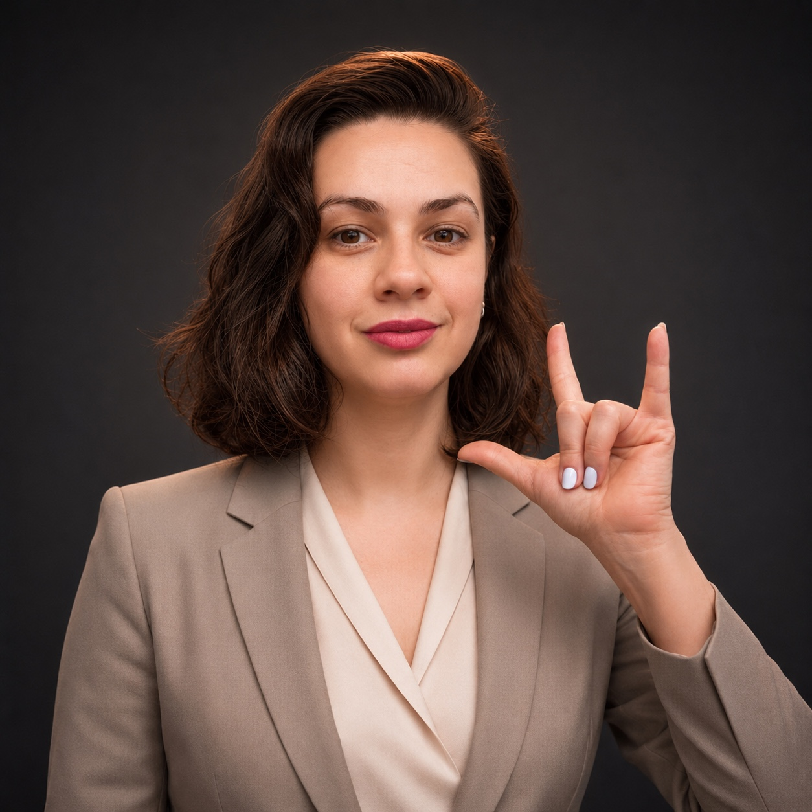

כבוד לשפה ולקהילה
לומדים את הסימנים יחד עם ההקשר והאנשים שמשתמשים בשפה.
אני חירשת מלידה ומורה מוסמכת לשפת הסימנים הישראלית. כבר 13 שנים אני מלמדת אנשים לתקשר איתי ועם הקהילה בשפה שרואים בידיים.

כשההורים שלי גילו שאני חירשת, הם למדו שפת סימנים כדי שנוכל לדבר. השפה הזאת נתנה לי קשר ישיר עם המשפחה שלי, והיא גם הסיבה שבחרתי ללמד.
אני מורה מוסמכת לשפת הסימנים הישראלית, עם 13 שנות ניסיון בהוראה ולמעלה מ 1,000 תלמידים שלמדו איתי.
תואר ראשון בחינוך מיוחד לחירשים ולכבדי שמיעה ותולדות האמנות, אוניברסיטת תל אביב.
לומדים את הסימנים יחד עם ההקשר והאנשים שמשתמשים בשפה.
אני מסבירה מה עושים ואיך משתמשים בזה בשיחה אמיתית.
מתרגלים, שואלים, מתקנים ומנסים שוב. לא נשארים עם רשימת מילים.
אני בונה מסלול לימוד בן שש רמות, כדי שאפשר יהיה להתקדם מהסימנים הראשונים לשיחה שוטפת.
אני רוצה להוסיף לו קורס דיגיטלי, מילון וידאו, ספרי ילדים וסיפורים מצוירים. חשוב לי שהחומרים יהיו מדויקים, נגישים, ויציגו את השפה מתוך החיים של הקהילה.
קורסי מתחילים, שיעורים פרטיים, הרצאות וסדנאות.
עשרה מפגשי זום. אלפבית, היכרות, משפחה, מספרים ותרגול שיחות.
שיעורי זום אישיים, עם תוכנית לפי הרמה והמטרה שלכם.
מפגש על שפת הסימנים, תרבות הקהילה ותקשורת עם אנשים חירשים.
עשרה מפגשי זום למתחילים. נלמד הצגה עצמית, משפחה, מספרים, ימים, שעות ושיחות יומיומיות. כל שיעור מוקלט, ויש תרגולים לחזרה.
לפרטים ולהרשמה: karingorelick91@gmail.comכן. קורס רמה 1 מתחיל מהיסודות ומתקדם בהדרגה.
אפשר לצפות בהקלטה ולחזור על התרגולים בזמן שנוח לך.
לא צריך לזכור הכול מיד. חוזרים על החומר ומתרגלים בין המפגשים.
כתבי לי על הגילאים והמסגרת. אענה בכנות אם הקורס מתאים או שנדרש מענה ממוקד יותר.